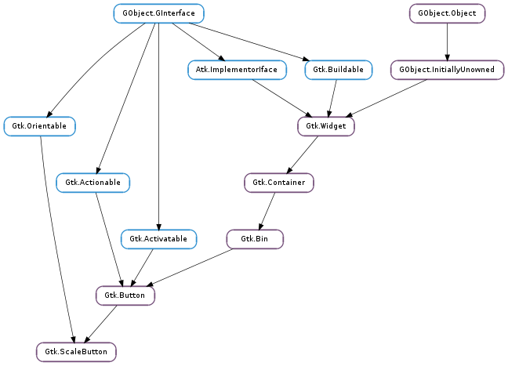

| Subclasses: | Gtk.VolumeButton |
|---|
| static | new(size, min, max, step, icons) |
| get_adjustment() | |
| get_minus_button() | |
| get_plus_button() | |
| get_popup() | |
| get_value() | |
| set_adjustment(adjustment) | |
| set_icons(icons) | |
| set_value(value) |
| Name | Type | Flags | Description |
|---|---|---|---|
| adjustment | Gtk.Adjustment | r/w | The Gtk.Adjustment that contains the current value of this scale button object |
| icons | list | r/w | List of icon names |
| size | Gtk.IconSize | r/w | The icon size |
| value | float | r/w | The value of the scale |
| Name | Parameters | Return | Description |
|---|---|---|---|
| popdown | The ::popdown signal is a keybinding signal which gets emitted to popdown the scale widget. The default binding for this signal is Escape. | ||
| popup | The ::popup signal is a keybinding signal which gets emitted to popup the scale widget. The default bindings for this signal are Space, Enter and Return. | ||
| value-changed | float | The ::value-changed signal is emitted when the value field has changed. |
| Name | Type | Access |
|---|---|---|
| parent | Gtk.Button | r |
Bases: Gtk.Button, Gtk.Orientable
Gtk.ScaleButton provides a button which pops up a scale widget. This kind of widget is commonly used for volume controls in multimedia applications, and GTK+ provides a Gtk.VolumeButton subclass that is tailored for this use case.
| Parameters: |
|
|---|---|
| Returns: | a new Gtk.ScaleButton |
| Return type: |
Creates a Gtk.ScaleButton, with a range between min and max, with a stepping of step.
| Returns: | the adjustment associated with the scale |
|---|---|
| Return type: | Gtk.Adjustment |
Gets the Gtk.Adjustment associated with the Gtk.ScaleButton ‘s scale. See Gtk.Range.get_adjustment () for details.
| Returns: | the minus button of the Gtk.ScaleButton |
|---|---|
| Return type: | Gtk.Widget |
Retrieves the minus button of the Gtk.ScaleButton.
| Returns: | the plus button of the Gtk.ScaleButton |
|---|---|
| Return type: | Gtk.Widget |
Retrieves the plus button of the Gtk.ScaleButton.
| Returns: | the popup of the Gtk.ScaleButton |
|---|---|
| Return type: | Gtk.Widget |
Retrieves the popup of the Gtk.ScaleButton.
| Returns: | current value of the scale button |
|---|---|
| Return type: | float |
Gets the current value of the scale button.
| Parameters: | adjustment (Gtk.Adjustment) – a Gtk.Adjustment |
|---|
Sets the Gtk.Adjustment to be used as a model for the Gtk.ScaleButton ‘s scale. See Gtk.Range.set_adjustment () for details.
| Parameters: | icons ([str]) – a None-terminated array of icon names |
|---|
Sets the icons to be used by the scale button. For details, see the Gtk.ScaleButton :icons property.
| Parameters: | value (float) – new value of the scale button |
|---|
Sets the current value of the scale; if the value is outside the minimum or maximum range values, it will be clamped to fit inside them. The scale button emits the Gtk.ScaleButton ::value-changed signal if the value changes.